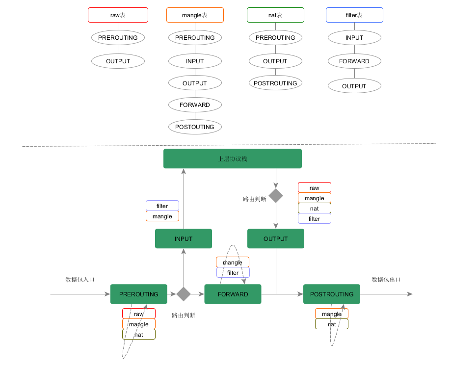
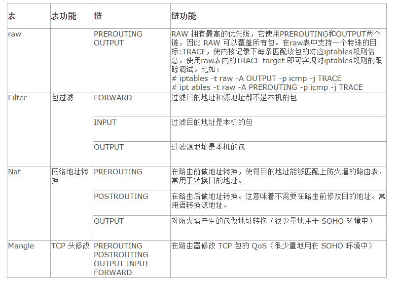
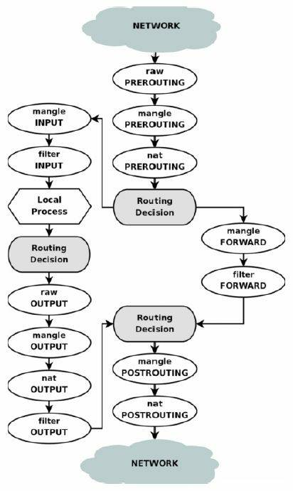
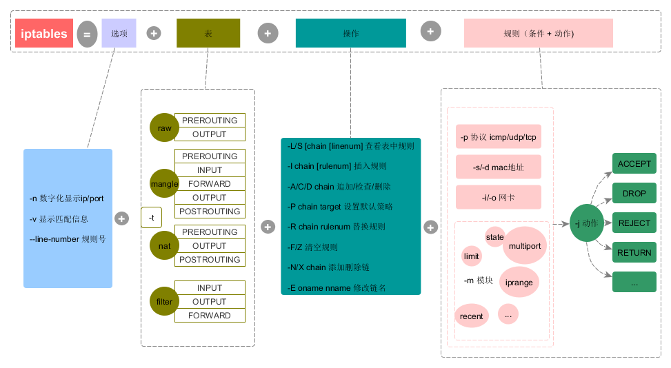

Android iptables netd
理解firewall整体架构及netd所处的位置
参考文档
Table
iptables内部（其实是Kernel的netfilter模块）维护着四个Table，分别是filter、nat、mangle和raw，它们对应着不同的功能，其作用域范围如下图：

路由判断，如果destination ip adress是本机地址，数据将会被转交给INPUT链。如果不是本机地址，则交给FORWARD链检测。
各表格详细信息：

有些Table的默认Chain具有相同的名字，导致我们理解起来有些困难。为此，必须结合下图所示的iptables数据包处理流程图来理解前述内容。由图可知，不同Table和Chain在此处理流程中起着不同的作用。

iptables 命令格式

Table
-t指定table，默认filter表
Commands
-A 追加新的规则
-D 删除旧的规则
-R 替换旧的规则（链中根据编号）
Rule
ACCEPT：接收数据包。
DROP：直接丢弃数据包。没有任何信息会反馈给数据源端。
RETURN：返回到调用Chain，略过后续的Rule处理。
QUEUE：数据返回到用户空间去处理。
目前只有INPUT、OUTPUT、FORWARD以及被这三个链调用的自定义链支持REJECT。
Options
-i：指定接收数据包的网卡名，如eth0、eth1等。
-o：指定发出数据包的网卡名。
-p：指定协议，如tcp、udp等。
-s，–source address[/mask]：指定数据包的源IP地址。
-j，–jump target：跳转到指定目标，如ACCEPT、DROP等。
示例
iptables -t nat -A PREROUTING -d 202.103.96.112 -j DNAT –to-destination 192.168.0.112
DNAT要在进入这个菱形转发区域之前，也就是在PREROUTING链中做，比如我们要把访问202.103.96.112的访问转发到192.168.0.112上。这个转换过程当中，其实就是将已经达到这台Linux网关（防火墙）上的数据包上的destination ip address从202.103.96.112修改为192.168.0.112然后交给系统路由进行转发。iptables -t nat -A POSTROUTING -s 192.168.0.0/24 -j SNAT –to-source 58.20.51.66
SNAT自然是要在数据包流出这台机器之前的最后一个链也就是POSTROUTING链来进行操作，这个语句就是告诉系统把即将要流出本机的数据的source ip address修改成为58.20.51.66。这样，数据包在达到目的机器以后，目的机器会将包返回到58.20.51.66也就是本机。如果不做这个操作，那么你的数据包在传递的过程中，reply的包肯定会丢失。假如当前系统用的是ADSL/3G/4G动态拨号方式，那么每次拨号，出口IP都会改变，SNAT就会有局限性。iptables -t nat -A POSTROUTING -s 192.168.0.0/24 -o eth0 -j MASQUERADE
重点在”MASQUERADE”！这个设定值就是”IP伪装成为封包出去(-o)的那块装置上的IP”！不管现在eth0的出口获得了怎样的动态ip，MASQUERADE会自动读取eth0现在的ip地址然后做SNAT出去，这样就实现了很好的动态SNAT地址转换。
netd wpa_supplicant
Netd是Network Daemon 的缩写，表示Network守护进程。Netd负责跟一些涉及网络的配置，操作，管理，查询等相关的功能实现，比如，例如带宽控制（Bandwidth），流量统计，带宽控制，网络地址转换（NAT），个人局域网（pan），PPP链接，soft-ap，共享上网（Tether），配置路由表，interface配置管理，等等。
Netd为开发者提供了一个用于管理的接口。就是ndc (native deamon connector)，通过adb可以直接使用CommandListener中定义的各类命令。相似的framework层的NativeDeamonConnector是为上层提供的接口；
system/netd
ndc.cpp
wpa_supplicant主要负责Wifi连接部分，连接完成之后就归netd管理了，iptables属于netd的一部分；
NetworkManagementService
获取网络接口
* frameworks/base/core/java/android/os/INetworkManagementService.aidl ├── String[] listInterfaces(); │ frameworks/base/services/core/java/com/android/server/NetworkManagementService.java └── public class NetworkManagementService extends INetworkManagementService.Stub └── public String[] listInterfaces() └── return mNetdService.interfaceGetList(); ├── 获取mNetdService服务 │ └── private void connectNativeNetdService() │ └── mNetdService = mDeps.getNetd(); │ └── static class Dependencies │ └── public INetd getNetd() │ └── return NetdService.get(); │ └── frameworks/base/services/net/java/android/net/util/NetdService.java │ └── public static INetd get() │ └── return get(-1); │ └── public static INetd get(long maxTimeoutMs) │ └── final INetd netdInstance = getInstance(); │ └── public static INetd getInstance() │ └── final INetd netdInstance = INetd.Stub.asInterface(ServiceManager.getService(Context.NETD_SERVICE)); └── system/netd/server/NetdNativeService.cpp └── binder::Status NetdNativeService::interfaceGetList(std::vector<std::string>* interfaceListResult) └── interfaceListResult->insert(end(*interfaceListResult), begin(ifaceList.value()), end(ifaceList.value()));设置firewall UID
* frameworks/base/core/java/android/os/INetworkManagementService.aidl ├── void setFirewallUidRule(int chain, int uid, int rule); │ frameworks/base/services/core/java/com/android/server/NetworkManagementService.java └── public class NetworkManagementService extends INetworkManagementService.Stub └── public void setFirewallUidRule(int chain, int uid, int rule) └── setFirewallUidRuleLocked(chain, uid, rule); ├── final int ruleType = getFirewallRuleType(chain, rule); └── mNetdService.firewallSetUidRule(chain, uid, ruleType); ├── 获取mNetdService服务 │ └── private void connectNativeNetdService() │ └── mNetdService = mDeps.getNetd(); │ └── static class Dependencies │ └── public INetd getNetd() │ └── return NetdService.get(); │ └── frameworks/base/services/net/java/android/net/util/NetdService.java │ └── public static INetd get() │ └── return get(-1); │ └── public static INetd get(long maxTimeoutMs) │ └── final INetd netdInstance = getInstance(); │ └── public static INetd getInstance() │ └── final INetd netdInstance = INetd.Stub.asInterface(ServiceManager.getService(Context.NETD_SERVICE)); └── system/netd/server/NetdNativeService.cpp └── binder::Status NetdNativeService::firewallSetUidRule(int32_t childChain, int32_t uid, int32_t firewallRule) └── int res = gCtls->firewallCtrl.setUidRule(chain, uid, rule);
usb热点到wlan0
Android log
I netd : tetherAddForward("rndis0", "wlan0") <9.63ms> I netd : ipfwdAddInterfaceForward("rndis0", "wlan0") <0.18ms>
本地转发
* system/netd/server/NetdNativeService.cpp ├── binder::Status NetdNativeService::tetherAddForward(const std::string& intIface, const std::string& extIface) │ └── int res = gCtls->tetherCtrl.enableNat(intIface.c_str(), extIface.c_str()); │ └── system/netd/server/TetherController.cpp │ └── int TetherController::enableNat(const char* intIface, const char* extIface) │ └── std::vector<std::string> v4Cmds = {"*nat", StringPrintf("-A %s -o %s -j MASQUERADE", LOCAL_NAT_POSTROUTING, extIface), "COMMIT\n" }; │ ├── iptablesRestoreFunction(V4, Join(v4Cmds, '\n'), nullptr) │ └── setForwardRules(true, intIface, extIface) └── binder::Status NetdNativeService::ipfwdAddInterfaceForward(const std::string& fromIface, const std::string& toIface) └── system/netd/server/RouteController.cpp └── return modifyTetheredNetwork(RTM_NEWRULE, inputInterface, outputInterface); ├── uint32_t table = getRouteTableForInterface(outputInterface); └── return modifyIpRule(action, RULE_PRIORITY_TETHERING, table, MARK_UNSET, MARK_UNSET, inputInterface, OIF_NONE, INVALID_UID, INVALID_UID);iptables -t nat -L
Chain PREROUTING (policy ACCEPT) target prot opt source destination oem_nat_pre all -- anywhere anywhere Chain INPUT (policy ACCEPT) target prot opt source destination Chain OUTPUT (policy ACCEPT) target prot opt source destination Chain POSTROUTING (policy ACCEPT) target prot opt source destination tetherctrl_nat_POSTROUTING all -- anywhere anywhere Chain oem_nat_pre (1 references) target prot opt source destination Chain tetherctrl_nat_POSTROUTING (1 references) target prot opt source destination MASQUERADE all -- anywhere anywhere
ip route
192.168.42.0/24 dev rndis0 proto kernel scope link src 192.168.42.129 192.168.43.0/24 dev wlan0 proto kernel scope link src 192.168.43.112
参考文档
路由mask: 192.168.42.0/24
后面的字段告诉我们通过哪个设备来和目的地址通信: dev rndis0
对于广播地址来说，它的目标是整一个IP网络，所以目标地址的scope定义为了link
最后一个字段的关键字是src，这个是告诉内核当使用这个设备往外路由信息时，选择的源地址是哪个。
源IP是一个路由条目的重要组成部分，这个源IP的意义在于一个补充作用。匹配还是根据目的IP进行匹配，但是由于在查找路由条目的时候很可能源地址还没有指定。典型的就是没有进行bind的发送情况，通常是随机选择端口和按照一定的规则源地址。这个一定的规则就是在这里的路由条目的src域可以影响。也就是如果进程没有bind一个源地址，将会使用这里src域里面的源地址作为数据包的源地址进行发送。但是如果进程提前bind了，命中了这个条目，就仍然会使用进程bind的源地址作为数据包的源地址。所以说这里的src只是一个建议的作用。